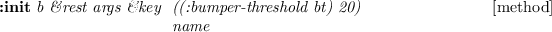

scene-model [クラス]
:super cascaded-coords
:slots name objs
-
-

-
- Create scene model
:objects [メソッド]
-
- Returns objects in the scene.
:find-object name [メソッド]
-
- Returns objects with given name.
:spots &optional name [メソッド]
-
- Returns spots in the scene. If name is given returns spot of given name.
:object name [メソッド]
-
- Returns object of given name.
:spot name [メソッド]
-
- Returns scene of given name.
-
-
2015-06-11